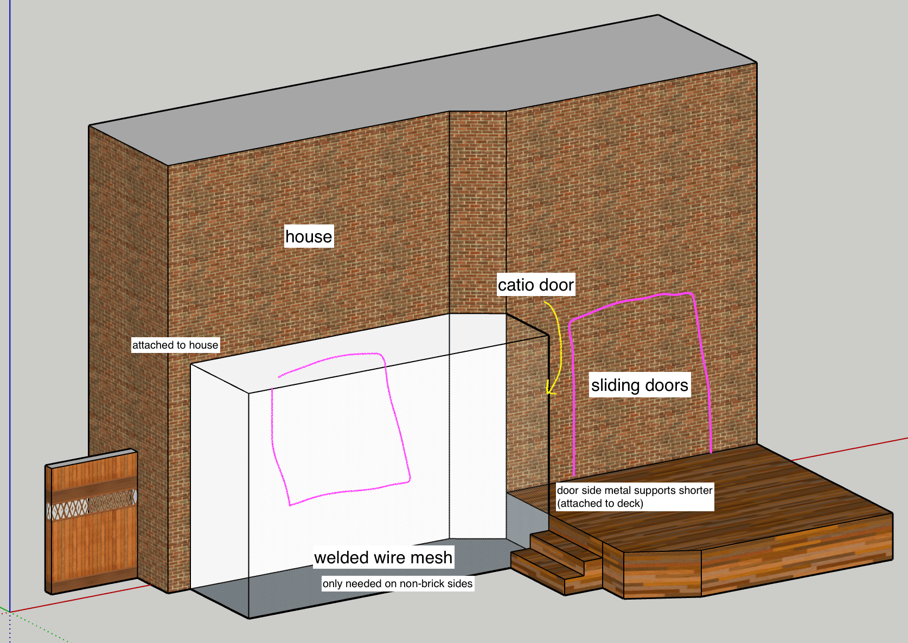
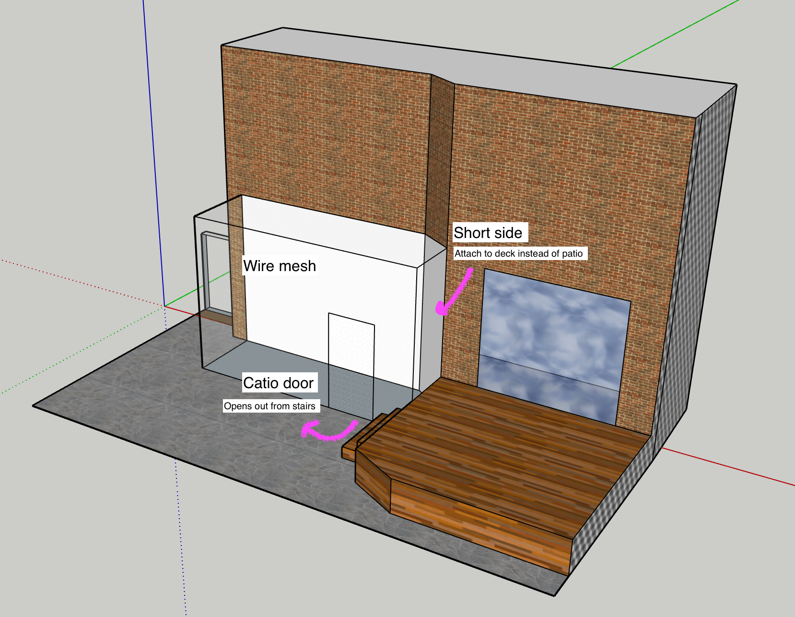
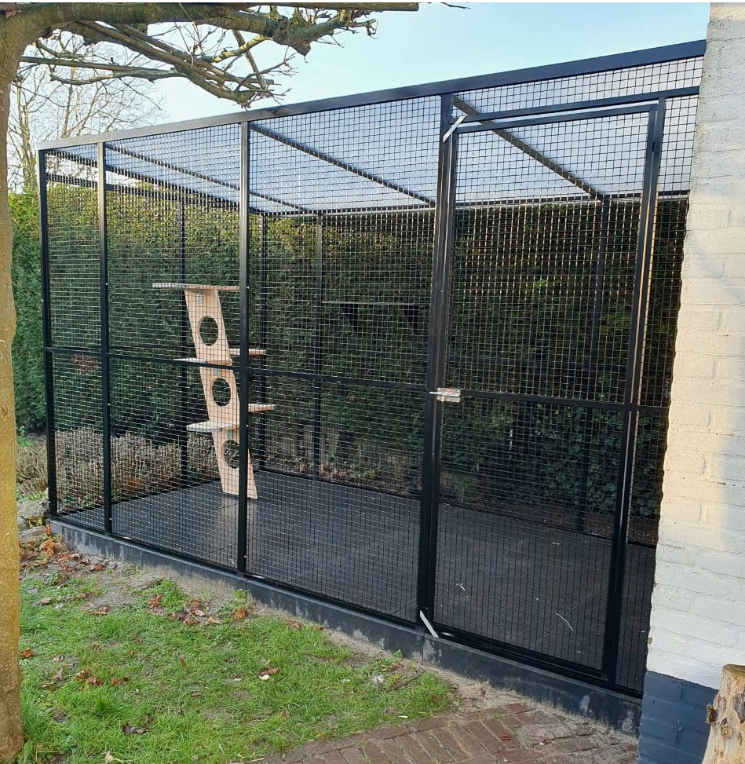
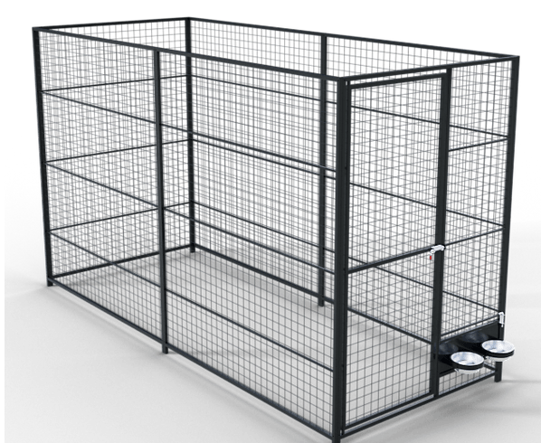
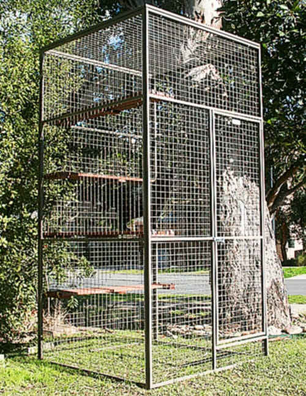

I'm looking to get a metal catio custom-built, since it seems like Canada doesn't really have anything off the shelf here. The US, Europe and even AUSTRALIA have them so this is probably a huge untapped market 👀
Requirements
- Rough dimensions: 9-10ft tall, possibly taller depending on window height (still need to measure), 10ft long, 5ft wide (irregular shape, see sketch)
- Some sort of metal construction (powder coated steel? galvanized steel? anthracite aluminium frame?), no wood
- Modular (bolt together construction) with potential for future extensibility
- Welded wire mesh (no more than 2x2 due to cat size)
- Strong enough for Canadian winter
- Should outlast the cats
This is a sketchup of where we want to place it:


Other products we like the look of
-
youtube video for a product by https://petfort-housing.com/
- We like the height on these and the metal wire roof
- medal paws system powder coated kennels
- Like the door height + “feet” to keep kennel raised and the additional horizontal support beams. However, not tall enough for our needs and no roof
- betta pet systems cat enclosures (australia)
- Not a fan of the shorter door height, but we like the different colour options available. Not sure if something similar would be available in Canada or be able to handle our climate.



Nice to haves
- Potential for future extension (e.g. adding a tunnel system), similar to youtube video (followup to earlier youtube video where they add a tunnel system from petfort.nl)
- Potentially an “airlock” system (space and cost dependent), similar to custom cages usa (instagram reel)